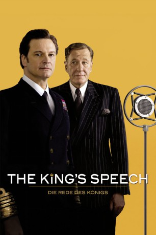
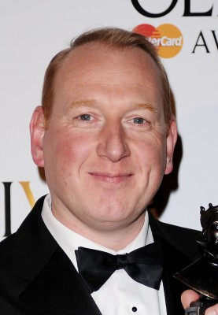
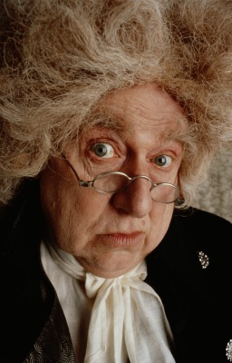
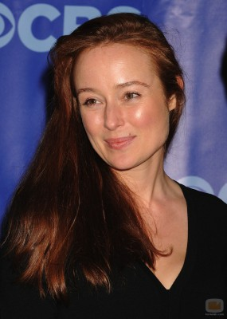
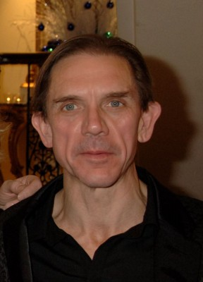
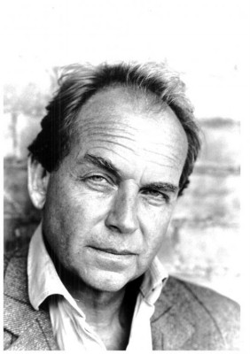
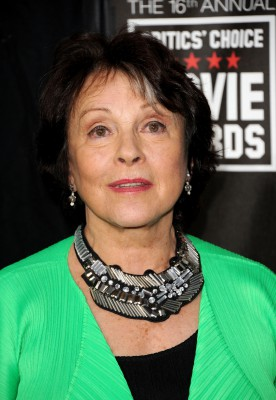
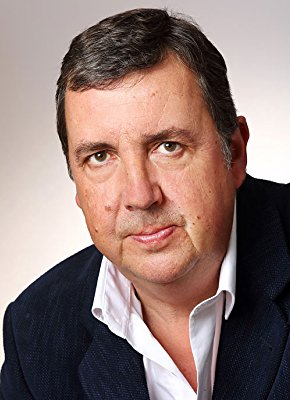
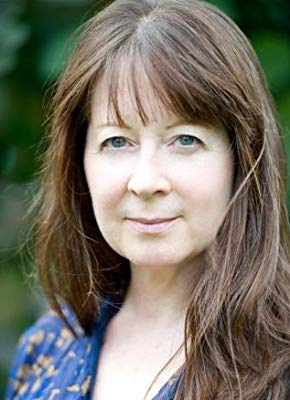
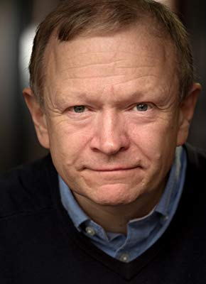

#106 The King's Speech - Die Rede des Königs
Alternativ: The King's Speech
Auszeichnungen: 4 Oscars gewonnen für 8 Oscars nominiert 1 GoldenGlobes gewonnen 1 BAFTA-Awards gewonnen
 
 IMDB-Wertung: 8.0 / 10
IMDB-Wertung: 8.0 / 10  Metascore: 88
Metascore: 88 
Es ist ein persönliches Drama auf großer Bühne, kraft des neuen Massenmediums Radio zig tausendfach verstärkt: Dies muss Albert, Duke of York und Sohn des englischen Regenten King George V., auf peinlich-demütigende Weise erleben, als er im Jahre 1925 im Wembley Stadium eine Eröffnungsrede halten muss – denn er ist Stotterer. Und doch wird er 14 Jahre später The King’s Speech halten, als er vors Mikrofon tritt, um den Mitbürgern des Englischen Empires mitzuteilen, dass England Deutschland den Krieg erklärt. Zu diesem Zeitpunkt ist aus Bertie, wie er im Kreise seiner Familie gerufen wird, King George VI. geworden, nachdem sein Vater verstorben ist und sein älterer Bruder David abdankte, um eine bürgerliche Amerikanerin zu heiraten. Bis er für The King’s Speech allerdings bereit ist, muss der König durch das Fegefeuer einer ganz besonderen Sprachtherapie gehen...
Jahr: 2010
Dauer: 118 Minuten
FSK: 0
Land: England Studio: Senator FilmTonspuren: DTS - ,
Untertitel:
Auflösung: 1080p (1920×1080) Größe: 8499 MB
Genre: Biographie, Drama, Geschichte
Regisseur: Tom Hooper
Drehbuch: David Seidler
Soundtrack: Alexandre Desplat
Darsteller:
 Colin Firth als King George VI
Colin Firth als King George VI Helena Bonham Carter als Queen Elizabeth
Helena Bonham Carter als Queen Elizabeth- Derek Jacobi als Archbishop Cosmo Lang
 Robert Portal als Equerry
Robert Portal als Equerry-  Adrian Scarborough als BBC Radio Announcer
 Andrew Havill als Robert Wood
Andrew Havill als Robert Wood- Charles Armstrong als BBC Technician
-  Roger Hammond als Dr. Blandine Bentham
- Geoffrey Rush als Lionel Logue
-  Jennifer Ehle als Myrtle Logue
- Freya Wilson als Princess Elizabeth
- Ramona Marquez als Princess Margaret
-  David Bamber als Theatre Director
 Michael Gambon als King George V
Michael Gambon als King George V Guy Pearce als King Edward VIII
Guy Pearce als King Edward VIII-  Patrick Ryecart als Lord Wigram
 Simon Chandler als Lord Dawson
Simon Chandler als Lord Dawson-  Claire Bloom als Queen Mary
 Tim Downie als Duke of Gloucester
Tim Downie als Duke of Gloucester- Eve Best als Wallis Simpson
 Timothy Spall als Winston Churchill
Timothy Spall als Winston Churchill- Anthony Andrews als Stanley Baldwin
- Mike Archer als Am Dram Stage Manager , uncredited
 Mihai Arsene als Romanian Dignitary , uncredited
Mihai Arsene als Romanian Dignitary , uncredited Graham Curry als Infantry , uncredited
Graham Curry als Infantry , uncredited- Julie Eagleton als Wealthy Patron , uncredited
 Adolf Hitler als Himself , archive footage, uncredited
Adolf Hitler als Himself , archive footage, uncredited- George Rodd als MP Listening to Radio , uncredited
-  Richard Dixon als Private Secretary
- Paul Trussell als Chauffeur
- Calum Gittins als Laurie Logue
- Dominic Applewhite als Valentine Logue
- Ben Wimsett als Anthony Logue
- Jake Hathaway als Willie
-  Teresa Gallagher als Nurse
- Orlando Wells als Duke of Kent
- Dick Ward als Butler
-  John Albasiny als Footman
- Danny Emes als Boy in Regent's Park
- John Warnaby als Steward
- Roger Parrott als Neville Chamberlain
- Max Callum als Royal Footman , uncredited
- James Currie als Binky , uncredited
- Filippo Delaunay als Undercook , uncredited
- Tony Earnshaw als Policeman , uncredited
- Adam Eveson als BBC Technician , uncredited
- Jensen Freeman als Bright Young , uncredited
- Sarah Molkenthin als House Maid , uncredited
- Martyn Moore als Pathe News Cameraman , uncredited
- Abbie Murison als Royal Maid , uncredited
Datei: X:\2010(G-M)\King's Speech - Die Rede des Königs, The (2010, FSKo.Al., 1920x1080).mkv seit 03.02.2015
Festplatte: HD 2010(G-Z)-2011(A-F)
 Es gibt insgesamt 85 Filme in der Gruppe '2010(G-M)'
Es gibt insgesamt 85 Filme in der Gruppe '2010(G-M)'